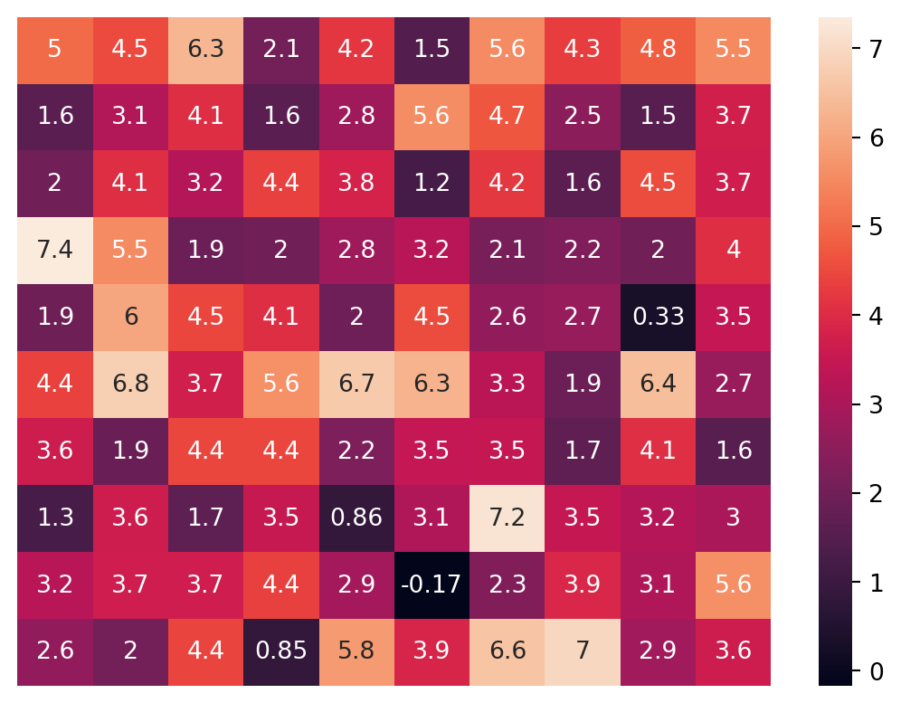
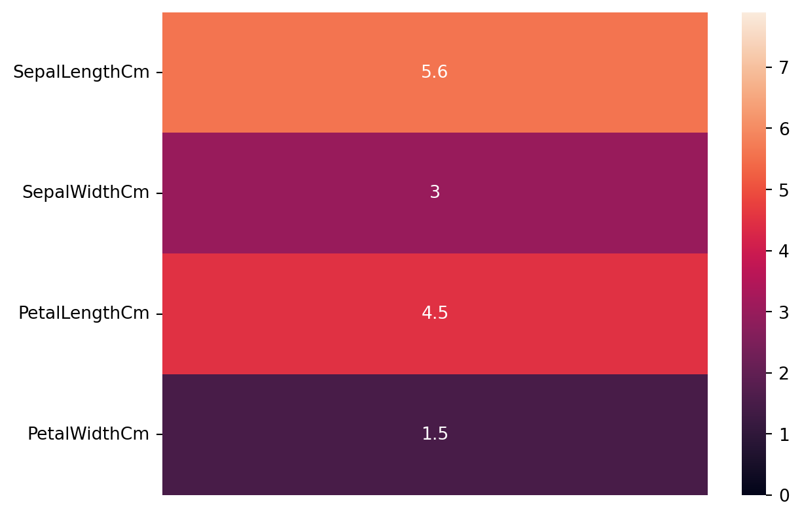
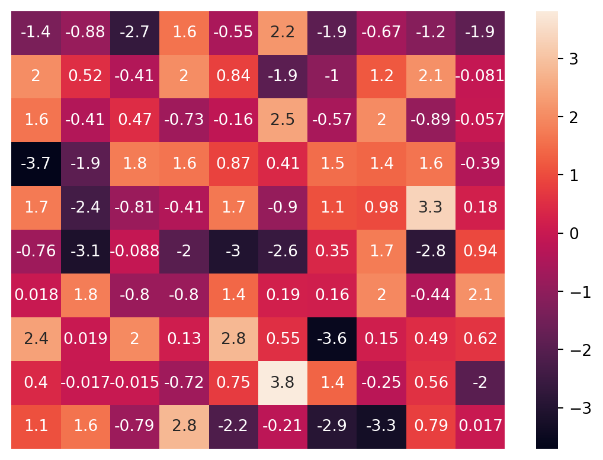
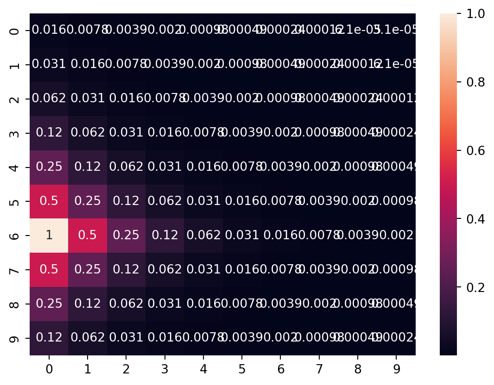
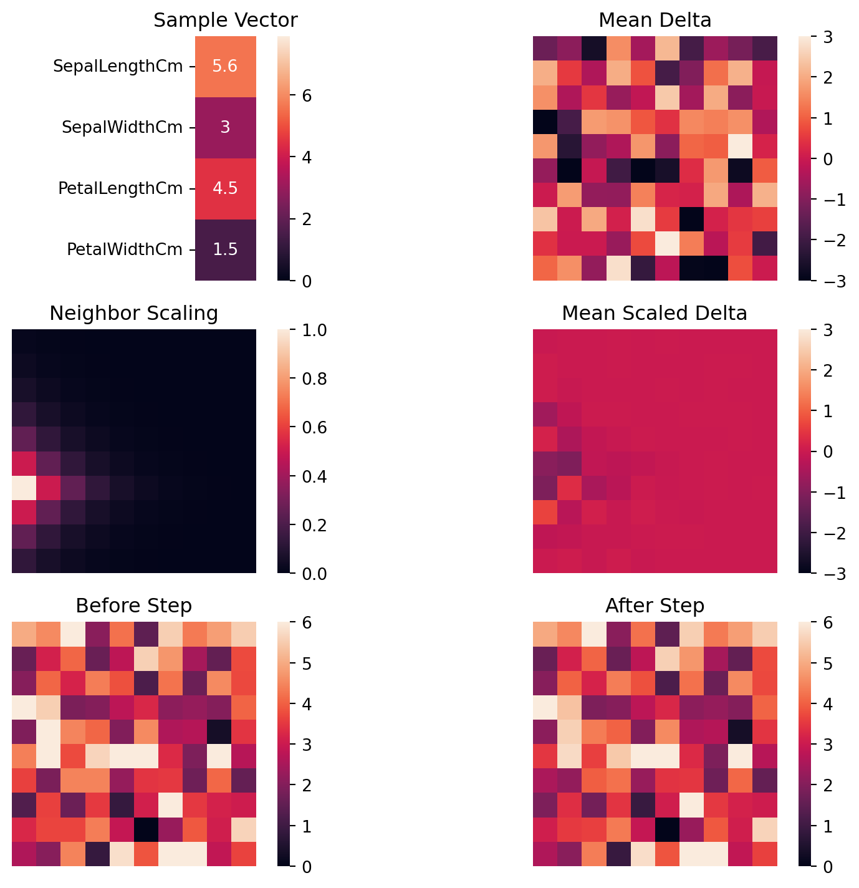

import pandas as pd
import numpy as np
import seaborn as sb
import einops as ein
import matplotlib.pyplot as pltSelf Organizing Maps
unsupervised
feature-reduction
visualization
Exploring how self organizing maps are created
Data
Let’s start by loading our data. We’ll be using data about Iris flowers
df = pd.read_csv("Iris.csv", index_col='Id')
df| SepalLengthCm | SepalWidthCm | PetalLengthCm | PetalWidthCm | Species | |
|---|---|---|---|---|---|
| Id | |||||
| 1 | 5.1 | 3.5 | 1.4 | 0.2 | Iris-setosa |
| 2 | 4.9 | 3.0 | 1.4 | 0.2 | Iris-setosa |
| 3 | 4.7 | 3.2 | 1.3 | 0.2 | Iris-setosa |
| 4 | 4.6 | 3.1 | 1.5 | 0.2 | Iris-setosa |
| 5 | 5.0 | 3.6 | 1.4 | 0.2 | Iris-setosa |
| ... | ... | ... | ... | ... | ... |
| 146 | 6.7 | 3.0 | 5.2 | 2.3 | Iris-virginica |
| 147 | 6.3 | 2.5 | 5.0 | 1.9 | Iris-virginica |
| 148 | 6.5 | 3.0 | 5.2 | 2.0 | Iris-virginica |
| 149 | 6.2 | 3.4 | 5.4 | 2.3 | Iris-virginica |
| 150 | 5.9 | 3.0 | 5.1 | 1.9 | Iris-virginica |
150 rows × 5 columns
Since we’re going to be doing a lot of vector math later using these measurements, let’s convert them into vectors right away.
df["vector"] = df.apply(
lambda r: np.array(
r[["SepalLengthCm", "SepalWidthCm", "PetalLengthCm", "PetalWidthCm"]],
dtype=np.float32,
),
axis=1,
)
df| SepalLengthCm | SepalWidthCm | PetalLengthCm | PetalWidthCm | Species | vector | |
|---|---|---|---|---|---|---|
| Id | ||||||
| 1 | 5.1 | 3.5 | 1.4 | 0.2 | Iris-setosa | [5.1, 3.5, 1.4, 0.2] |
| 2 | 4.9 | 3.0 | 1.4 | 0.2 | Iris-setosa | [4.9, 3.0, 1.4, 0.2] |
| 3 | 4.7 | 3.2 | 1.3 | 0.2 | Iris-setosa | [4.7, 3.2, 1.3, 0.2] |
| 4 | 4.6 | 3.1 | 1.5 | 0.2 | Iris-setosa | [4.6, 3.1, 1.5, 0.2] |
| 5 | 5.0 | 3.6 | 1.4 | 0.2 | Iris-setosa | [5.0, 3.6, 1.4, 0.2] |
| ... | ... | ... | ... | ... | ... | ... |
| 146 | 6.7 | 3.0 | 5.2 | 2.3 | Iris-virginica | [6.7, 3.0, 5.2, 2.3] |
| 147 | 6.3 | 2.5 | 5.0 | 1.9 | Iris-virginica | [6.3, 2.5, 5.0, 1.9] |
| 148 | 6.5 | 3.0 | 5.2 | 2.0 | Iris-virginica | [6.5, 3.0, 5.2, 2.0] |
| 149 | 6.2 | 3.4 | 5.4 | 2.3 | Iris-virginica | [6.2, 3.4, 5.4, 2.3] |
| 150 | 5.9 | 3.0 | 5.1 | 1.9 | Iris-virginica | [5.9, 3.0, 5.1, 1.9] |
150 rows × 6 columns
Now that we have the data prepared, let’s check out what our data looks like when plotted.
Code
fig, ax = plt.subplots(2, figsize=(8, 10))
sb.scatterplot(
df,
x="SepalLengthCm",
y="SepalWidthCm",
hue="Species",
ax=ax[0],
)
_ = sb.scatterplot(
df,
x="PetalLengthCm",
y="PetalWidthCm",
hue="Species",
ax=ax[1],
)From these plots it appears that each of the three different species have a fairly distinct cluster.
Building a Self Organizing Map Step by Step
There are roughly 5 steps in fitting an SOM.
- Sample a vector
- Calculate deltas between the sample and each map node
- Find the best matching unit (BMU)
- Scale the deltas using a neighbor function
- Apply the scaled deltas to the map nodes
We’ll go over each step and construct them one by one. Sampling a vector from some dataset is easy enough, so we’ll skip to the fun stuff!
Initializing the weights
Before we can do anything, we have to create the map itself. All this takes is initializing an H x W x F tensor, where F is the feature dimension of our sample vectors.
There’s a variety of ways we could select the initial weight values. For now we’ll initialize the weights by sampling from normal distributions based on the mean and standard deviation of each feature. This will ensure that our starting weights are at least somewhat similar to our data.
def create_map(height: int, width: int, features: int, data: np.ndarray | None = None):
if isinstance(data, np.ndarray):
mean = data.mean(axis=0)
dev = data.std(axis=0)
else:
mean = 0
dev = 1.0
return np.random.normal(mean, dev, size=(height, width, features))
map = create_map(10, 10, 4, np.stack(df['vector']))Code
_ = sb.heatmap(
map.mean(axis=2),
annot=True,
yticklabels=[],
xticklabels=[],
)
We have a map! With this done we can get started with the interesting stuff.
Delta
The first step of fitting is to find the difference between each map node and a sampled vector. To start off let’s grab a random vector from our data.
sample = df["vector"].sample(1).iloc[0]Code
_ = sb.heatmap(
sample[:, None],
annot=True,
yticklabels=["SepalLengthCm", "SepalWidthCm", "PetalLengthCm", "PetalWidthCm"],
xticklabels=[],
vmin=0,
vmax=np.stack(df["vector"]).max(),
)
Next, let’s find the difference (or delta) between this sample vector and each map node.
def map_delta(map: np.ndarray, sample: np.ndarray) -> np.ndarray:
delta = sample - ein.rearrange(map, "h w f -> (h w) f")
delta = ein.rearrange(delta, "(h w) f -> h w f", h=map.shape[0])
return deltaCode
_ = sb.heatmap(
map_delta(map, sample).mean(axis=2),
annot=True,
yticklabels=[],
xticklabels=[],
)
Best Matching Unit
Now just finding the delta is good, but we don’t want to change the entire map at once. Instead we’ll strategically apply the most of change to specific regions. To do so we’ll need to find the map node that is the most similar to our sample. This node is what’s known as the Best Matching Unit (BMU).
There’s a variety of ways to compare two vectors, but we’ll be using Euclidean Distance.
def get_bmu(map: np.ndarray, vector: np.ndarray):
map_view = ein.rearrange(map, "h w f -> f (h w)")
delta = map_view - vector[:, None]
nearest = np.sqrt(np.einsum("ij, ij -> j", delta, delta))
return np.unravel_index(nearest.argsort().argmin(), map.shape[:2])
idx = get_bmu(map, df["vector"].iloc[0])Using this function we’ll find that our sample’s BMU is at the map index {python} idx.
Neighbor Function
Things are coming together! The last key ingredient is the Neighbor Function. This is a function that will provide a scaling coefficient for each map node based on its distance to the BMU. With this we can not only apply the most change to the BMU, but gradually decrease how much we’re change the rest of the map as we move away from the BMU.
The goal is to have map nodes close to each other be similar to eachother in the same way that our sample is similar to other datapoints.
Now then, if we went ahead and made a Neighbor Function that took in the indices of a node and the indices of the BMU and found how much it should be scaled, it would work but it would be very slow. Instead, we can create all of the scales at once so we can apply changes to the entire map at once!
def neighbor_scale(index: np.ndarray, map_shape: tuple[int, int]) -> np.ndarray:
i, j = np.indices(map_shape, sparse=True)
scale = np.abs(i - index[0]) + np.abs(j - index[1])
scale = scale * 2
scale[index] = 1
scale = 1 / scale
return scaleLet’s try visualizing this with a heatmap to understand what’s happening a little better.

Looking at the map we can see that the scale of the BMU index is 1, meaning we’ll be applying the maximum amount of change at that node. As we move further away from the BMU the scales rapidly decrease, meaning the changes happening in the rest of the map will be increasingly small until they’re very tiny.
With this we can change the BMU the most, and each of its neighbors by lesser amounts based on how far they are from the BMU
This marks off two critical pieces of fitting a self organizing map!
Reviewing a Fitting Step
Now that we have each ingredient for fitting, let’s bring them together to create a fitting step.
def fit_to_sample(map: np.ndarray, sample: np.ndarray, lr: float):
bmu_idx = get_bmu(map, sample)
scale = neighbor_scale(bmu_idx, map.shape[:2])
delta = map_delta(map, sample)
return delta * np.expand_dims(scale, -1) * lrWith each of the individual steps now figured out, it should be helpful to create a visualization of everything together now.
Note: The delta applied to the map will also be scaled by a learning rate (lr), but for visualization we’ll leave it at 1.0
Code
fig, ax = plt.subplots(3, 2, figsize=(10.3, 9))
mean_delta = map_delta(map, sample).mean(axis=2)
scale = neighbor_scale(idx, (10, 10))
mean_scaled_delta = fit_to_sample(map, df["vector"].iloc[0], 1.0).mean(axis=2)
before = map.mean(axis=2)
after = (map + fit_to_sample(map, df["vector"].iloc[0], 1.0)).mean(axis=2)
max, min = 6, 0
common = {
"xticklabels" : [],
"yticklabels" : [],
"square" : True,
}
_ = sb.heatmap(
sample[:, None],
ax=ax[0, 0],
annot=True,
yticklabels=["SepalLengthCm", "SepalWidthCm", "PetalLengthCm", "PetalWidthCm"],
xticklabels=[],
square=True,
vmin=0,
vmax=np.stack(df["vector"]).max(),
).set_title("Sample Vector")
sb.heatmap(
mean_delta,
ax=ax[0, 1],
vmin=-3,
vmax=3,
**common
).set_title("Mean Delta")
sb.heatmap(
scale,
ax=ax[1, 0],
vmin=0,
vmax=1,
**common
).set_title("Neighbor Scaling")
sb.heatmap(
mean_scaled_delta,
ax=ax[1, 1],
vmin=-3,
vmax=3,
**common
).set_title("Mean Scaled Delta")
sb.heatmap(
before,
ax=ax[2, 0],
vmin=min,
vmax=max,
**common
).set_title("Before Step")
_ = sb.heatmap(
after,
ax=ax[2, 1],
vmin=min,
vmax=max,
**common
).set_title("After Step")
Now we can see a single step of the complete process in front of us!